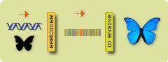

BOLD-ID Barcode of Life Identification System
BOLD-ID Barcode of Life Identification System
| Summary | |
| Type of tool | Application |
| Function | Species identification using gene sequences |
| Online / Desktop | Online |
| Computer infrastructure | Web browser |
| Development status | Operational |
| Time of use | Data analysis |
| Licence | Unknown |
Barcode of Life Data Systems (BOLD) “provides a species identification tool that accepts DNA sequences from the barcode region and returns a taxonomic assignment to the species level when possible”.1
Description
The BOLD Identification System (IDS) accepts sequences from the 5′ region of the mitochondrial gene COI and returns a species-level identification when one is possible. Further validation with independent genetic markers will be desirable in some forensic applications.

The reference database of validated records is used by default and is recommended for all identification purposes.2
DNA barcode sequences are very short relative to the entire genome and they can be obtained reasonably quickly and cheaply. The “Folmer region” at the 5′ end of the cytochrome c oxidase subunit 1 mitochondrial region (COI) is emerging as the standard barcode region for almost all groups of higher animals. This region is 648 nucleotide base pairs long in most groups and is flanked by regions of conserved sequences, making it relatively easy to isolate and analyze. A growing number of studies have shown that COI sequence variability is very low (generally less than 1-2%) and that the COI sequences of even closely related species differ by several percent, making it possible to identify species with high confidence. For those groups in which COI is unable to resolve species-level differences, CBOL recommends the use of an additional gene region. In some groups, COI is not an effective barcode region and a different standard region must be identified. In all cases, DNA barcoding is based on the use of a short, standard region that enables cost-effective species identification.3
This is part of the BOLD online workbench for assisting with collection, management, analysis and use of DNA barcodes.
BOLD is associated with the following barcoding campaigns:4
- ACG Parasitoids
- All Birds Barcoding Initiative
- Ants Of The World
- Barcoding Fish (FishBOL)
- Barcoding Mammals of the World
- Canadian Barcode of Life Network (BOLNET)
- Consortium for the Barcode of Life (CBOL)
- Fungal Barcoding
- Genbank Animals (COI)
- GenBank Fungi (COI)
- Lepidoptera
- Mosquitoes of the World
- Arctic regions (PolarBOL)
- Tephretid barcode Initiative
Function
- Identification tools
Why use this tool?
- To determine the species from an appropriate gene sequence
Who will use this tool?
- Data creation
- Expert
- Data users
- Expert
- DNA skills required
How will the tool be used?
- Data sequences required in fasta format
- Online tool through web browser
- User input required
Where in the data chain could this tool be used?
- User’s machine
When could this tool be used?
- As a post process, after data is with the user
Availability
- Identification: http://www.boldsystems.org/views/idrequest.php
- A resource of BOLD: http://www.barcodinglife.org/
- Documentation: http://www.boldsystems.org/docs/handbook.php
- Consortium for the Barcode of Life (CBOL): http://www.barcodeoflife.org/
- Cost: free
- Licence unknown
Comments
BOLD is a resource for the DNA barcode community.5
- It supports the organization and analysis of barcode data.
- It provides a repository for barcode records, storing specimen data and images as well as sequences and trace files.
- It provides an efficient interface for submitting barcode records to GenBank.
- It provides an identification engine based on the current barcode library.
- It monitors the number of barcode sequence records and species coverage.
BOLD also encourages external connectivity. They have developed BOLD-ECS which “provides web developers and bioinformaticians the ability to build tools and workflows that can be integrated with the BOLD framework”.6
Perhaps it is possible to build into ALA, the ability to directly connect to and integrate with BOLD-ECS.